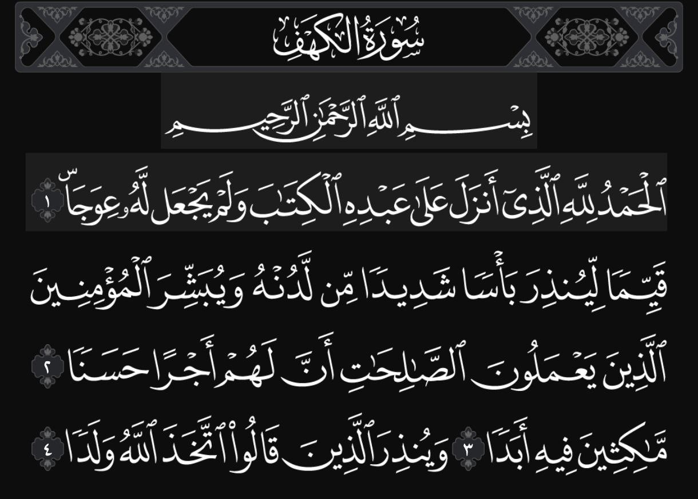
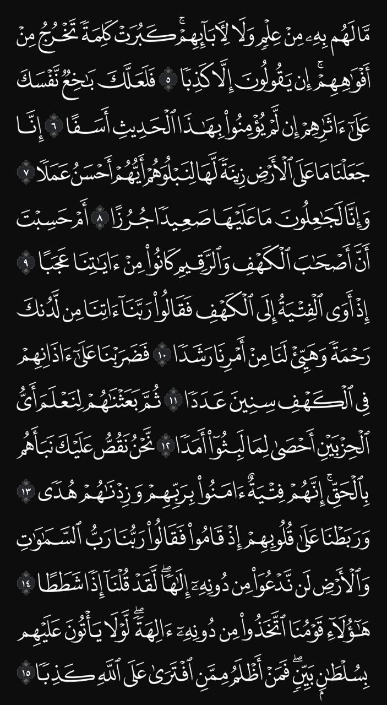
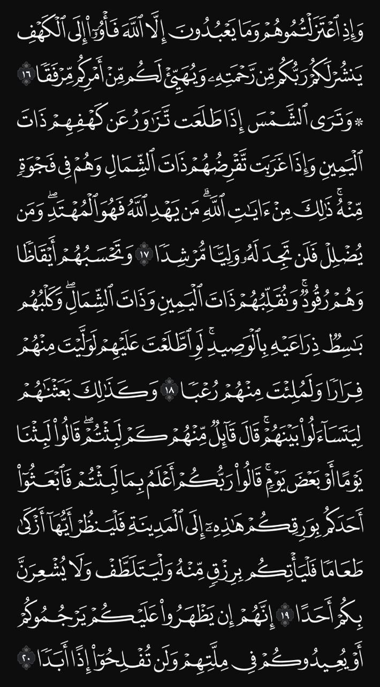
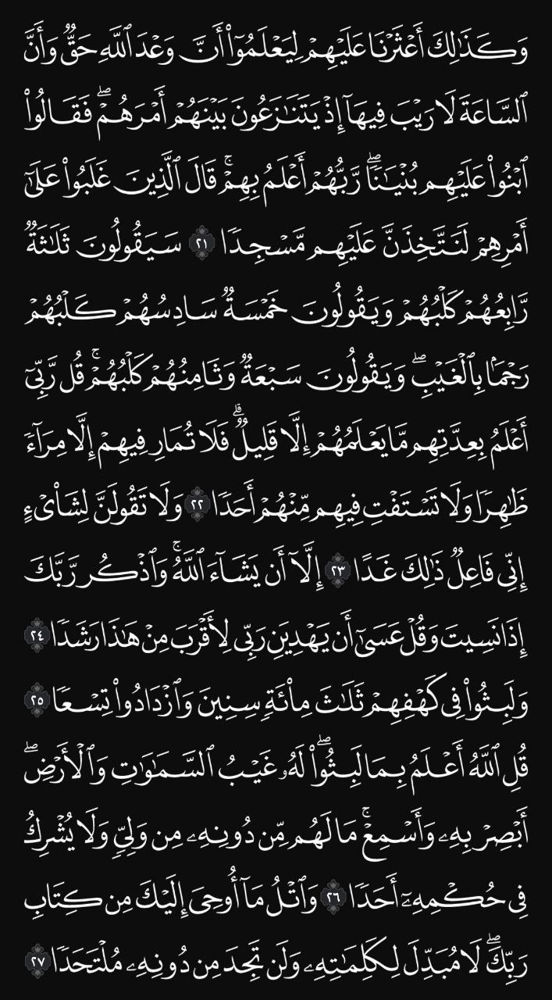
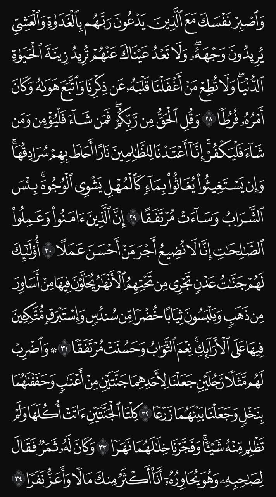
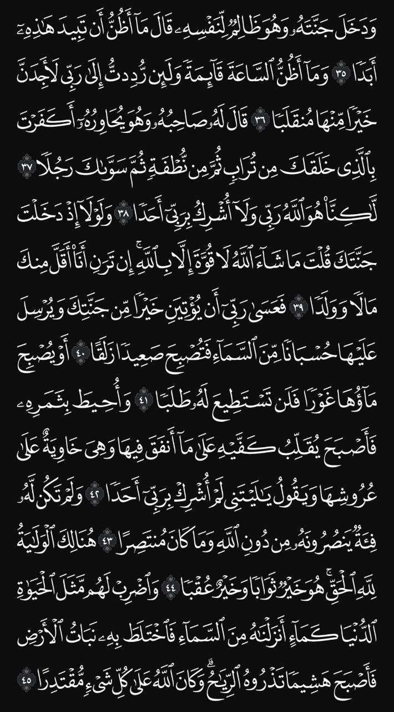
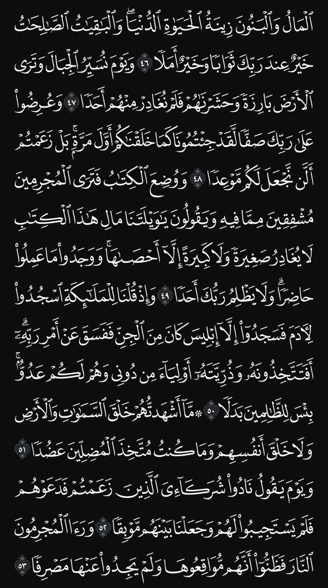
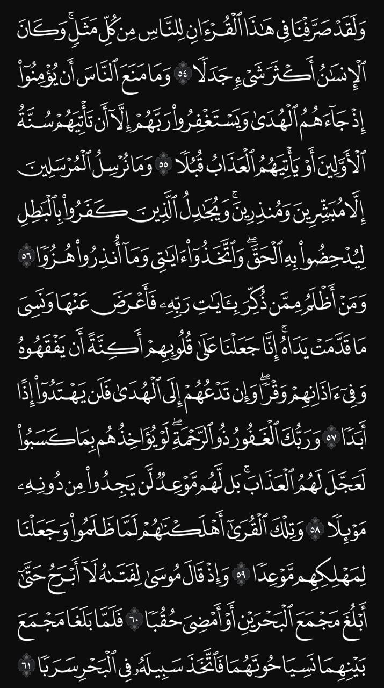
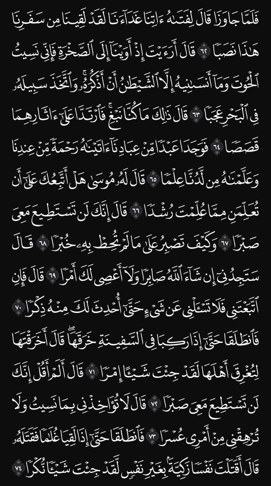
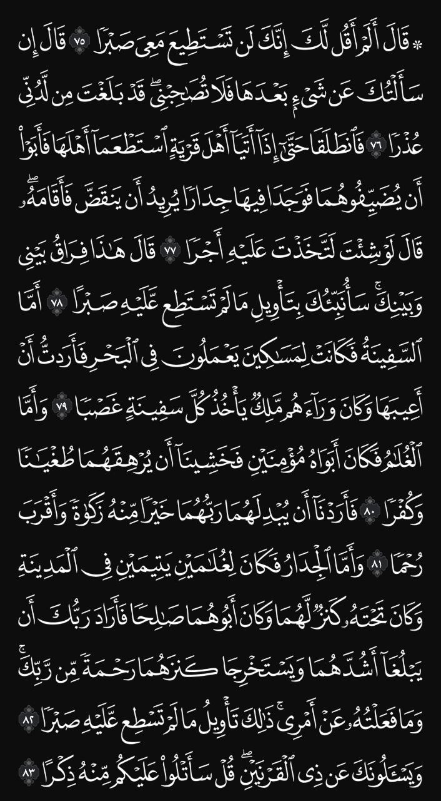
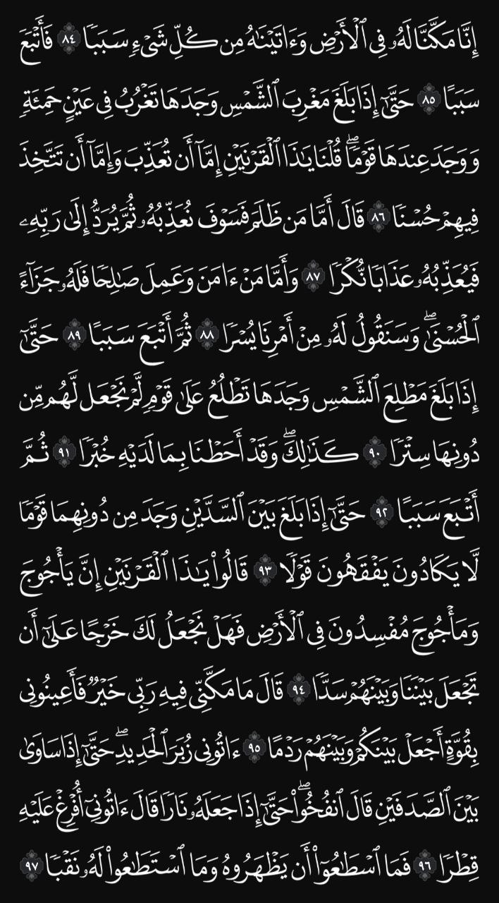
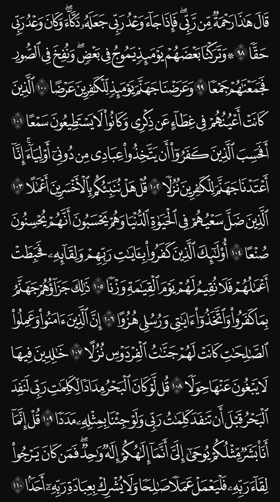
اللهم اجعل القرآن ربيع قلبي، ونور صدري، وجلاء حزني، وذهاب همي.
اللهم إني أسألك الجنة وما قرب إليها من قول أو عمل، وأعوذ بك من النار وما قرب إليها من قول أو عمل.
اللهم ارزقني تلاوة القرآن آناء الليل وأطراف النهار.
اللهم اجعلني من أهل القرآن الذين هم أهلك وخاصتك.
اللهم صلِّ وسلم على نبينا محمد عدد ما ذكره الذاكرون وغفل عن ذكره الغافلون.
اللهم ارزقنا حسن الخاتمة.
اللهم ثبتني عند السؤال.
اللهم اجعل قبري روضة من رياض الجنة.
اللهم استرني فوق الأرض وتحت الأرض ويوم العرض.
اللهم اجعل آخر كلامي من الدنيا شهادة أن لا إله إلا الله.
اللهم أعني على ذكرك وشكرك وحسن عبادتك.
اللهم ارزقني لذة النظر إلى وجهك الكريم.
اللهم ثبت قلبي على دينك.
اللهم إني أسألك العفو والعافية.
اللهم إنك عفو تحب العفو فاعفُ عني.
اللهم اغفر لي ولوالديّ وللمؤمنين يوم يقوم الحساب.
اللهم آتنا في الدنيا حسنة وفي الآخرة حسنة وقنا عذاب النار.
اللهم يسر أمري واشرح لي صدري.
اللهم ارحم موتانا وموتى المسلمين.
اللهم اشف مرضانا ومرضى المسلمين.
اللهم افتح لي أبواب رزقك الواسعة.
اللهم اجعلني من عبادك الصالحين.
اللهم إني أستودعك قلبي فلا تجعل فيه أحداً غيرك.
اللهم اجعلني خفيفًا على عبادك، كريمًا في عطائك، نقيًا في نيتي.
اللهم اجعلني لك كما تحب، وارضني بما تحب.
اللهم أخرجني من ظلمات الوهم، وأكرمني بنور الفهم.
اللهم اجعل يومي هذا خيرًا من أمسي.
اللهم إني أعوذ بك من قلب لا يخشع، ومن دعاء لا يُسمع.
اللهم اجعلنا ممن تقول لهم النار: "اعبر فإن نورك أطفأ ناري".
اللهم اجعلني من الذين إذا أحسنوا استبشروا وإذا أساؤوا استغفروا.
اللهم لا تحرمني من خير ما عندك بسوء ما عندي.
اللهم ارزقني من حيث لا أحتسب.
اللهم انصر الإسلام والمسلمين.
اللهم اجعل القرآن العظيم ربيع قلبي.
اللهم اجعلني هادياً مهدياً غير ضال ولا مضل.
اللهم إني أعوذ بك من زوال نعمتك وتحول عافيتك.
اللهم اهدنا فيمن هديت.
اللهم اجعلنا من الذين إذا أحببتهم ابتليتهم فصبروا.
اللهم لا تكلني إلى نفسي طرفة عين.
اللهم اجعلني مفتاحًا للخير مغلاقًا للشر.
اللهم اجعل أعمالي خالصة لوجهك الكريم.
اللهم إني أعوذ بك من فتنة المحيا والممات.
اللهم ارزقني سعة الصدر وراحة البال.
اللهم إنك تعلم سري وعلانيتي فاقبل معذرتي.
اللهم اشرح لي صدري ويسر لي أمري.
اللهم صل على محمد وعلى آل محمد كما صليت على إبراهيم.
اللهم اجعلني من المتوكلين عليك حق التوكل.
اللهم اجعل خير عملي آخره، وخير أيامي يوم ألقاك.
اللهم اجعلني ممن يستمعون القول فيتبعون أحسنه.